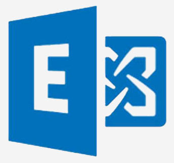

English
English

INGENIEUR SYSTEMS & RÉSEAUX
Environnement Windows ou Linux Sécurité Réseau et Virtualisation VMware
English
Environnement Windows ou Linux Sécurité Réseau et Virtualisation VMware
Vous souhaitez améliorer les performances et la sécurité de vos systèmes informatiques et assurer leur durabilité ?
N'hésitez pas à me contacter pour vous accompagner dans cette démarche
Je suis ingénieur systèmes et réseaux, spécialisé dans la conception et l'architecture de systèmes et réseaux informatiques. Mon expérience me permet de mettre en œuvre des solutions techniques sur mesure adaptées aux besoins des entreprises. Je m'occupe de la planification des capacités des infrastructures, de l'optimisation des performances et de l'élaboration de stratégies de croissance future.
Me connaitre d'avantageOptimisez votre infrastructure IT dès maintenant !
Voici les domaines dans lesquels je peux vous accompagner

Virtualisation & CloudTransformez votre infrastructure en virtualisant vos ressources informatiques. Cela optimise l'utilisation du matériel, réduit les coûts et améliore la flexibilité et l'évolutivité de votre environnement informatique. |

Gestions & ServicesAssurez la performance et la sécurité de vos systèmes informatiques. Je vous propose des solutions sur mesure pour la gestion, la maintenance et l'optimisation de vos infrastructures informatiques. |

Réseaux & SécuritéBénéficiez d’une infrastructure réseau fiable et efficace, accompagnée de solutions de sécurité robustes pour protéger vos données et vos systèmes contre les cyber menaces. |

Communication & CollaborationFacilitez les échanges au sein de votre entreprise avec des solutions de communication et de collaboration déployée au niveau de votre Datacenter, pour une connectivité rapide, fluide et sécurisée. |
Voici quelques solutions qui vous permettront de bénéficier de mon expertise
 | |
Déployez votre plateforme de virtualisation (SDDC) avec VMware vSphereJe peux vous accompagner dans l'installation de serveurs physiques ESXi et la configuration de vos clusters VMware. Je suis également prêt à former vos collaborateurs à l'utilisation de VMware vSphere pour une utilisation efficace de votre infrastructure de virtualisation...voir plus |
|
 | |
Déployez votre solution hyperconvergée (HCI) avec VMware vSANJe peux vous accompagner dans la conception, l'installation et la configuration de votre solution VMware vSAN. Cela inclut la création et l'optimisation des clusters vSAN pour garantir des performances élevées et une haute disponibilité. ...voir plus |
|
 | |
Implémentez votre réseau virtuel (SDN) avec VMware NSXVous souhaitez renforcer la sécurité et la flexibilité de votre infrastructure. Je peux vous accompagner dans le déploiement de VMware NSX (Installation et configuration de NSX Manager, NSX Edge), que ce soit pour la segmentation du réseau, la micro-segmentation ou la gestion centralisée des politiques de sécurité ...voir plus |
|

|
|
Centralisez la gestion de votre entreprise avec Active DirectoryJe peux vous aider à élaborer un plan pour la configuration de votre forêt Active Directory, l'installation de vos contrôleurs de domaine et la configuration des paramètres de sécurité pour protéger vos données. Je peux vous aider à configurer des stratégies de groupe pour gérer les autorisations et les stratégies de sécurité. ...voir plus |
|
|  | |
Déployez votre solution de messagerie avec Microsoft ExchangeJe peux vous aider en configurant vos serveurs de boîtes mail, en déployant un serveur Edge pour protéger vos serveurs Front End et en assurant une haute disponibilité de la base de données pour éviter les interruptions de service ...voir plus |
|

|
|
Déployez votre plateforme de collaboration avec Microsoft SharePointJe peux vous aider à déployer votre parc de serveurs SharePoint, à installer et configurer les différents composants de votre ferme (serveurs d'applications, serveurs frontaux et serveur de base de données SQL) et à créer les sites SharePoint nécessaires à votre entreprise (sites d'équipe, sites de publication, etc.)...voir plus |
|
 | |
Implémentez votre solution de visioconférence avec Skype EntrepriseJe peux configurer la solution de visioconférence sur site Skype Entreprise de Microsoft pour répondre à vos besoins de collaboration. Cela comprend la configuration d'un pool de serveurs front-end, d'un serveur Edge et d'Office Web App. |
|
 | |
Améliorez les performances de votre réseau avec CISCOJe peux configurer vos commutateurs et routeurs CISCO en fonction de vos besoins spécifiques en matière de connectivité et de sécurité réseau. Je peux configurer des fonctionnalités telles que les VLAN, la sécurité des ports et la qualité de service. Je peux configurer les protocoles de routage RIP, OSPF ou EIGRP. |
|
 | |
Sécurisez votre infrastructure avec FortigateJe peux vous aider en mettant en place des politiques de sécurité, des connexions VPN SSLet IPSec, SDWAN, ainsi qu'en gérant des fonctionnalités avancées telles que la gestion des utilisateurs et des politiques de sécurité, la détection et la prévention des menaces, l'analyse du trafic réseau et les configurations de haute disponibilité ...voir plus |
|
 | |
Assurez la disponibilité de vos données avec VEEAMJe peux vous aider à installer et configurer la sauvegarde et la réplication Veeam. Pour assurer la disponibilité de vos données, sauvegarde en temps réel, réplication et restauration rapide de vos machines virtuelles, sur votre datacenter ou sur le cloud ...voir plus |
|
 | |
Surveillez votre infrastructure informatique avec ZABBIXJe vous aide à installer et configurer le serveur de A à Z. Vous pouvez surveiller toute forme de produit, serveur physique, hyperviseur, machine virtuelle, équipement réseau, pare-feu ...voir plus |
|
 | |
Gérez vos actifs informatiques avec GLPIJe vous accompagne dans l'installation et la configuration complète de GLPI. Cet outil vous permet de gérer efficacement votre parc informatique, vos tickets de support, vos inventaires matériels et logiciels, ainsi que vos workflows. |
Cette certification atteste de ma capacité à optimiser et transformer les opérations réseau et la sécurité informatique au sein de l’entreprise. Elle reconnaît mes compétences dans le déploiement, la configuration et la gestion de solutions de virtualisation réseau basées sur VMware NSX.
Livrée par Broadcom , Organisation

Cette certification valide que je peux mettre en œuvre, gérer et dépanner une infrastructure vSphere, en utilisant les meilleures pratiques pour fournir une base puissante, flexible et sécurisée pour l'agilité commerciale qui peut accélérer la transformation vers le cloud computing.
Livrée par Broadcom , Organisation

J'ai acquis une solide expérience théorique et pratique à travers différents modules tels que l'architecture des systèmes embarqués, la programmation parallèle, les réseaux et leur sécurité, le développement mobile, la virtualisation, et bien plus encore.
Livré par UMMTO, Université
J'ai appris à coder, à gérer des bases de données et à comprendre les réseaux, la sécurité informatique et les systèmes. Cette formation m'a donné de solides bases dans plusieurs domaines de l'informatique et m'a aidé à m'adapter aux nouvelles technologies.
Livré par UMMTO, Université

üëâ C‚Äôest simple, gratuit et sans engagement.
Tu es étudiant en informatique ou simplement passionné par le domaine ? Tu débutes et tu as des questions, besoin d’orientation, de conseils sur les outils, les formations ou les bonnes pratiques ?
Je t’offre un accompagnement gratuit via Telegram. Pose tes questions, partage tes doutes ou tes projets, je suis là pour t’écouter et t’aider à progresser.
Discutons sur TelegramParce que tout le monde a commenc√© quelque part. üöÄ
|
Passionné par les nouvelles technologies depuis mon plus jeune âge, j’ai naturellement choisi de poursuivre des études en informatique à l’université. En 2014, j’ai obtenu un Master en Informatique à l’Université Mouloud Mammeri de Tizi Ouzou (Algérie), avec une spécialisation en Réseaux de Mobilité et Systèmes Embarqués. J’ai débuté ma carrière en tant qu’Administrateur Systèmes et Réseaux dans une entreprise algérienne du secteur de l’audiovisuel. Après trois ans d’expérience, j’ai rejoint une société du domaine des transports où j’ai évolué en tant qu’Ingénieur Systèmes et Infrastructures. Mon expertise s’est consolidée au fil des années, soutenue par l’obtention de certifications reconnues telles que :
Aujourd’hui, j’occupe le poste de Chef de Division Administration Des Systèmes, où je pilote une équipe en charge de la gestion, de la sécurisation et de l’évolution des systèmes d’information de l’entreprise. COMPÉTENCES
|
 |
|